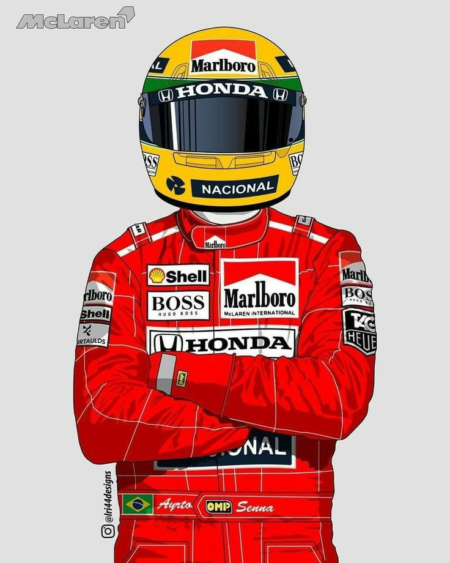

Boas-vindas ao 8cylinder
Contéudo resumido em uma paixão: motores V8
Bem-vindo ao 8cylinder, o seu site dedicado aos motores V8 — sinônimo de potência, tradição e emoção
automotiva. Aqui, você vai descobrir a história desses gigantes, explorar carros icônicos, entender como
funcionam e até mesmo ouvir aquele ronco inconfundível. Convida-se todos os interessados a adentrar neste mundo
repleto de emoções. Estão prontos?
Por onde deseja começar?
- História: Conheça a trajetória dos V8, dos primeiros modelos
aos supercarros modernos.
- Carros icônicos: Mustang, Camaro, Charger... Veja alguns modelos
que fizeram história com motores V8.
- Como funciona?
O que é um motor V8, maneira como funciona e componentes.
- Assista e ouça:
Veja diferentes vídeos de carros V8 acelerando.
